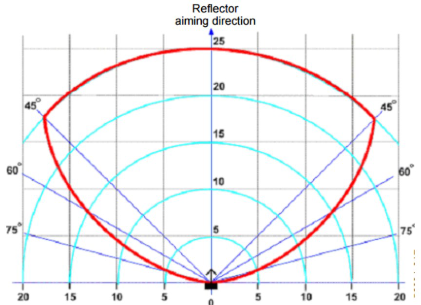
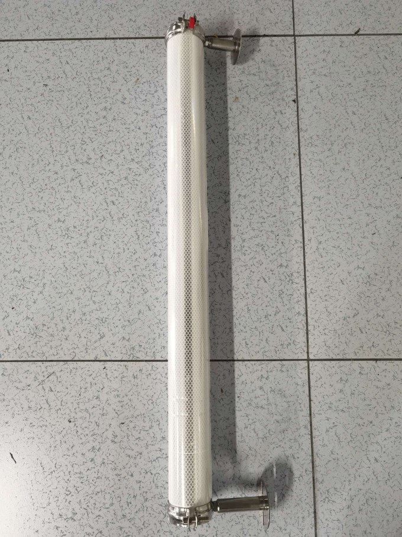
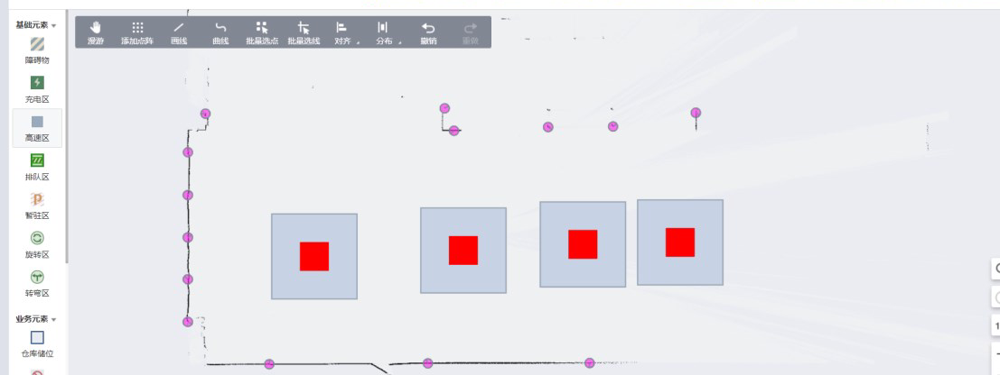

叉取机器人 SLAM 建图与上线
叉车实施的标准顺序是「布反光条 → SLAM 采图建图 → 平台上线 → 画拓扑地图」。本篇按手册顺序拆开每一步：有线连接与无线配置、反光条与反光柱的量化要求、采图速度与闭环、日志目录与下载、离线建图与旋转、平台服务与地图导入、拓扑绘制与偏移，以及用灯语判断上线状态。
地图与定位目录
本篇为基于厂商操作手册的原创整理，只提炼流程与判断方法，不复制原文；不同版本与控制器存在差异，结论请结合现场验证使用。
实施顺序与三项前置确认
叉车实施第一步是部署反光条，然后是SLAM 建图、平台上线、绘制拓扑地图。动手前先确认三件事：
- 按设计方案 CAD 图纸实测现场空间，重点量立柱、机台位置，确认与图纸误差。
- 核算机器人旋转空间是否与实际空间冲突（叉车回转半径大，最容易被货架、立柱挡）。
- 确认现场无线网络覆盖，以及服务器侧调度系统已部署可用。
反光条没布完就采图，地图上的反光点与现场对不上，后面只能重采。先布条、再采图，是这份流程里最省时间的一条经验。
有线连接：电脑 IP 与调试口
配置无线网络需要先用调试线把笔记本和机器人直连，两者必须在同一网段。机器人有线 IP 为 192.168.1.64（示例，以现场交付值为准）。
- 笔记本有线网卡设为固定 IP：前三段固定
192.168.1，末位在 0–253 之间，建议取 100–253，避开机器人内部组件占用的地址。 - 子网掩码填常规值（
255.255.255.0），网关可留空。 - 调试口位于车体左侧，用调试线连接调试口与笔记本有线网口。
- 连接成功后即可进入无线配置。
0–99 段可能被车内激光、相机等组件占用，配完 ping 不通机器人时，先换末位再查线。
配置无线网络
用车端调试工具连接机器人：点左上角「+」，「添加方式」选按 IP，依次填机器人有线 IP 192.168.1.64、用户名 admin、初始密码（见交付资料），确认。
然后在「参数配置 > 网络配置 > wifi 参数」中填写：
| 参数 | 取值 / 说明 |
|---|---|
| 无线 SSID | 现场无线网络名称 |
| 密钥 | 现场无线密码 |
| 安全模式 | 无密码网络必须选 None-Encrypted |
| DHCP | 开启后自动分配 IP；关闭则手动配固定 IP |
填完点应用，等约一分钟，点右上角刷新，「设备 IP 地址」出现分配到的 IP 即配置成功。没有 IP 说明 SSID/密钥不对或不在覆盖范围。
反光条定位条件（决定能不能建图）
叉车导航激光位置较高、轮廓信息薄弱，除 3D 叉车外主要靠反光条定位。定位的硬门槛是：
以导航激光为原点，20 m 范围内，至少在三个象限内同时扫到 5 根以上反光条，否则定位不可信、上车即报「定位数据不可信」。

注意这是同时满足：根数够、象限够、距离够。只在一条通道上密集贴条，机器人在通道尽头仍会丢定位。
反光条与反光柱的规格要求
| 项目 | 要求 |
|---|---|
| 反光条宽度 | 标准 40 mm |
| 单根长度 | 人工裁剪时 500–700 mm |
| 相邻间距 | 大于 500 mm，且不要过度一致 |
| 粘贴高度 | 反光条中心与导航激光等高 |
| 安装面 | 相对平整、不易遮挡，避开玻璃 / 不锈钢 / 消防柜等高反物 |
| 角度 | 平面反光条有可见角度限制，需多角度混合粘贴 |
| 反光柱 | 内为 PVC 管外覆反光材料，长度一般 ≥500 mm、直径 70–100 mm，垂直安装、中心与激光等高 |

① 两根并排粘贴或人为加宽——采集时按 40 mm 识别，加宽不提高精度，反而误定位；② 间距过于均匀 / 对称布置——场景高度相似会让机器人「迷路」；③ 大门正反面反光条对齐——正反面必须错开，间距大于 1 m。
遥控方式与数据采集
遥控有三种方式，现场优先用手操器（手机 APP 在行走中可能卡顿）：
- 手操器：线束插入车体手操器接口，电源灯与数据灯亮即连接成功；机器人开手动模式；先确认急停在拔起状态，然后按住使能键再转摇把，不按使能键机器人不会动。旋钮切「就地正反转」可原地转，「正常」控制前进后退。
- 手机 APP 无线遥控：手机与机器人接入同一网络，在「设备直连」列表选对应车号；列表不显示时可切「IP 直连」手动填机器人 IP。
采集规范：
- 先规划运行区域，沿区域走一个完整闭环，记录开始与结束时间。
- 车速控制在
0.5 m/s以内。 - 尽量不要原地旋转 180°，否则影响地图质量。
闭环是硬要求：建图软件跑完后，路线上出现圆圈标记才说明构成闭环。
日志目录与下载
主控 4.0 的日志分四类，导航激光数据在 /mnt 下：
| 目录 | 内容 |
|---|---|
/mnt/agv_log | AGV 日志 |
/mnt/lidar_pf-R2000_* | 导航激光日志（建图用这个） |
/mnt/lidar_sick-tim510_1116_-377_-70 | 避障激光数据；1116_-377_-70 为坐标系 X、Y、角度，Y 为正代表左激光 |
/mnt/rcd | RCD 日志 |
- 用 CRT 或同类终端连接机器人。
cd /mnt/lidar_pf-R2000_1096_0_0/data进入导航激光目录（认准lidar_pf-R2000前缀，不同车型后缀数字不同）。ls查看文件，文件名即起止时间，例如lidar_pf-R2000_<车号>_1096_0_0_20220916_151833~20220916_151921.hiklog。- 挑选覆盖行走开始到结束的文件，用
sz 文件名下载；多个文件可先输入sz再右键补全文件名批量下载。
按文件名的时间段逐条核对，必须完整覆盖「开始遥控」到「走完闭环」的整段时间；缺一段就只能重采。
离线建图、旋转与编辑
在线建图可能丢数据，叉车统一用离线建图（工具 MapStudio，主控 4.0 需用最新版本，版本过老会有兼容问题）。
- 新建「地图单元名称」（自定义），再新建运行地图，在 LSLAM 地图一栏选本地导入。
- 在「激光数据」中导入下载的导航激光数据 → 「设置基础数据」下一步。
- 填地图名称（一般两位英文字母）→ 下一步，软件自动跑完数据；路线出现圆圈标记说明是闭环。
- 跑完生成 SLAM 地图，点「完成」并保存到指定文件夹。图中黄色圆点即识别到的反光条。
- 旋转：保存后点击地图进入旋转编辑。可用 90° 快捷旋转；也可打开辅助线比对倾斜，用「智能旋转」沿一段笔直的固定轮廓（墙体、机台）画线，软件自动调垂直；残余倾斜在「当前旋转角度」里手输。
- 编辑：点「完成旋转，开始绘制」进入地图编辑，逐处比对地图黄色反光点与现场实际粘贴位置；现场没贴却有黄点的即为误识别，点中后按
delete删除。 - 编辑完点右上角保存。
不锈钢、玻璃、消防柜在扫图时容易被误识别成反光条，不删会在上线后引起定位跳变。
平台上线一：服务配置与平台 IP
平台侧要让机器人「找到服务、下到地图」，三处配置必须相互一致：
- 服务配置：在「搭建模型 > 系统配置 > 服务配置」编辑对应服务，修改「IP 地址」与「数据库 URL」中的 IP。单机部署填 RCS 所在服务器 IP；集群部署填服务分配的虚拟 IP。
- 工作模式：车端「关键配置 > 关键参数」把工作模式从测试模式改为正常模式（新车出厂为测试模式，到厂必须手动改）。
- 导航模式：车端「定位导航配置 > 导航参数」选
LSLAM。 - 平台 IP：车端「平台配置 > 平台参数」填 RCS IP 与端口，须与平台服务里的「IP 地址」「设备注册端口」完全一致——机器人就是按这里注册上线的。
地图侧：先在「地图规划 > 地图配置」新建拓扑地图，再到「SLAM 地图管理」添加两位英文字母名称的地图并导入离线建图结果。
平台上线二：拓扑地图绘制
进「地图配置」找到地图点「地图编辑」，勾选「SLAM 背景」以离线地图为底图绘制，位置更准。先画主通道，初次上线只加「高速区」点位，其余等机器人上线后按上报坐标微调。
- 加点：左侧选「高速区」，在地图上逐点点位。
- 批量改点属性：新点默认 1×1，用「批量选点」框选后右键「点属性」，在「点位大小(宽/高)」里统一尺寸。
- 批量对齐：框选后右键「对齐」，选水平/垂直对齐。
- 批量划线：框选后右键「批量划线」，选择连线方向。
- 偏移修正：点右侧 1:1 查看若整体偏移，用「批量选点」框选全部点位，用键盘方向键整体平移。
- 完成后保存，并在「服务配置 > RCS 服务」中关联拓扑地图、保存并配置。

最后在「AGV 配置 > AGV 类型配置」按铭牌填长度、宽度、类型等设备参数，再到「AGV 配置」添加设备编号（单台「单编号添加」、连号批量用「编号段添加」），选好所属地图与导航类型。
上线与灯语判断
把机器人遥控到画好的拓扑路线附近，退出遥控、关闭手动模式、按复位；定位环境好时会自动上线，不需要手动重定位。
| 灯态 / 显示屏提示 | 含义 | 处理 |
|---|---|---|
| 绿灯 + 「任务空闲」 | 正常上线 | 无需处理 |
| 黄灯 + 「小车不在拓扑元素中」 | 已上线但偏离拓扑路线较远 | 监控客户端看实际位置，遥控回拓扑路线 |
| 黄灯转红 + 「定位数据不可信」 | 当前位置不满足上线条条件 | 检查周边反光条数量/象限，先移到环境好的区域上线 |
| 红灯 + 「slam 地图未配置」 | 没从平台下载到地图 | 回查服务配置、工作模式、平台 IP；/mnt/map_list 下多余地图只留正确的 |
核对下载是否正确的依据：4.0 主控下载的地图名为 MAP_XX_Y.lmap，XX 为 SLAM 地图编号、Y 为版本号，两者都要与「SLAM 地图管理」中的编号、版本一致。
收尾：坐标复核与交付
- 登录监控客户端（与平台同一套账号，IP 为 CMS 服务 IP），查看上车位置是否贴合拓扑；双击机器人图标可查看定位坐标并控制移动。
- 把车遥控到规划好的储位，用「当前位置」坐标反推储位点位坐标，比在底图上目测更准。
- 首次定位完储位后，重复移动机器人到同一储位，观察坐标是否漂移，与 CAD 图纸比对后微调拓扑点。
- 保存地图与 AGV 配置，把建图工程文件、SLAM 地图（含编号与版本）、拓扑地图一并归档到交付目录。
- 交接时同步「哪个地图编号对应哪个区域」以及反光条布置图，后续扩建按同一规则补点补条。
灯语绿灯任务空闲、监控客户端位置贴合路线、储位坐标复测无漂移、地图编号版本与平台一致。
上线前核对
- 已按 CAD 图纸实测立柱、机台位置，并确认机器人旋转空间无冲突
- 笔记本有线 IP 与机器人同网段（192.168.1.x，末位取 100–253），调试线接在车体左侧调试口
- 无线 SSID、密钥与安全模式配置正确，应用后刷新能看到设备 IP
- 反光条宽 40 mm、单根 500–700 mm、中心与导航激光等高、相邻间距大于 500 mm 且不完全均匀
- 20 m 内至少三个象限能同时扫到 5 根以上反光条，无并排粘贴、无对称布置，大门正反面错开且间距大于 1 m
- 采集车速不超过 0.5 m/s，全程无原地旋转 180°，路线为完整闭环并记录了起止时间
- 下载的激光日志时间范围完整覆盖行走开始到结束
- 建图工具为最新版本，地图名称两位英文字母，保存后已完成旋转校正（辅助线/智能旋转）
- 已逐点比对地图黄色反光点与现场粘贴位置，误识别点全部删除后再保存
- 服务配置 IP、工作模式（正常模式）、导航模式（LSLAM）、平台 IP 与端口四处一致
- 拓扑地图已勾选 SLAM 背景绘制，批量改点位大小/对齐/划线，1:1 复核无整体偏移，并已在 RCS 服务中关联
- 上线灯语为绿灯「任务空闲」，下载地图的 MAP_XX_Y 编号与版本与平台一致，储位坐标复测无漂移